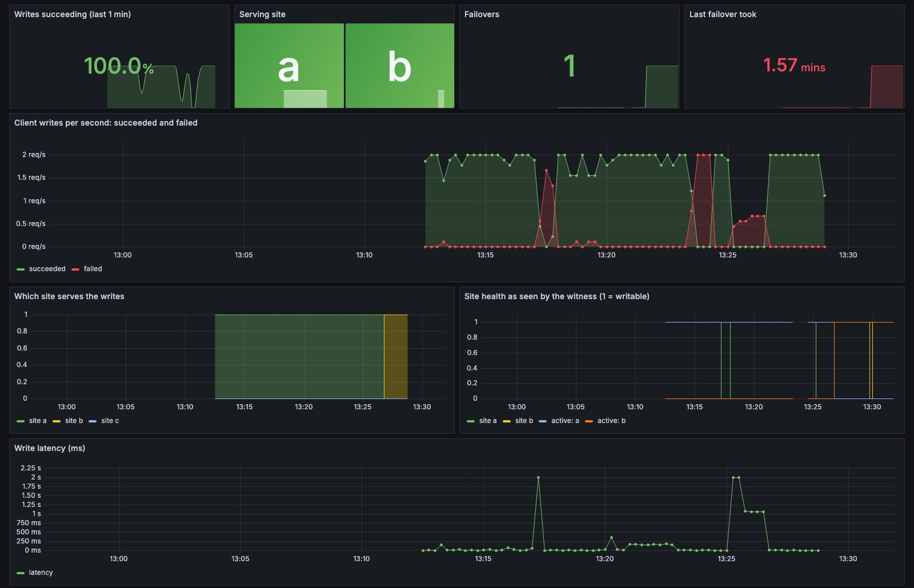

ITI C2 Testbed: a Three-Site Resilient Infrastructure Lab
A multi-site infrastructure lab shaped by National Defence's Information Technology Infrastructure in Support of Command and Control project: three sites on Proxmox, a Kubernetes cluster at each of two sites, replicated storage and databases, a witness that fails the service over between sites without ever letting two sites write at once, and every failure measured.
Overview
The ITI C2 Testbed is a working, bench-scale answer to one question from National Defence's Information Technology Infrastructure in Support of Command and Control (ITI in Sp of C2) project: how do you keep a command-and-control service running, and its data intact, when a server, a disk, a network link or a whole site fails? It is built as code, rehearsed for real on one machine, and measured.
The DND project, listed in the Defence Capabilities Blueprint at $250 million to $499 million, will replace the Consolidated Secret Network Infrastructure and many single-purpose classified networks with a secure, disruption-tolerant information exchange capability, interoperable with joint, interagency, multinational and public partners. Disruption tolerance is the part a homelab can practise honestly: redundancy at every layer, failover that never corrupts data, and numbers for how long recovery takes.
The lab has three sites. Site A runs the service, site B is a warm standby fed by streaming database replication, and site C holds the witness that decides failovers, the global DNS name, the backups and the monitoring. A small command-and-control message service, C2 Board, stands in for a real C2 application, and a prober writes an order to it every half second, so every failure shows up as failed or lost orders.
Everything is in a repository: github.com/TYFSADIK/iti-c2-testbed, with Terraform for the Proxmox VMs, Ansible for every machine, the Kubernetes manifests, the failover controller, the prober, the chaos scripts and 21 automated tests.
The DND Project
From the public entry in the Defence Capabilities Blueprint, managed by the Directorate of Capability Integration at National Defence.
| Item | Public detail |
|---|---|
| Project | Information Technology Infrastructure in Support of Command and Control (ITI in Sp of C2), replacement project |
| Objective | Secure, disruption-tolerant information exchange, interoperable with Joint, Interagency, Multinational and Public partners, and readily evolved for future challenges |
| Replaces | The Consolidated Secret Network Infrastructure (CSNI) and numerous single-purpose classified networks across DND/CAF |
| Contributes to | The Military Integrated Information Infrastructure (MI3) in the CAF C4ISR Strategic Vision |
| Funding range | $250 million to $499 million |
| Options analysis | Completed |
| Definition | In progress |
| Start of implementation | 2025/2026 |
| Initial delivery | 2028/2029 |
| Final delivery | 2030/2031 |
| Capability areas | C4I; Cyber, Electronic and Irregular Warfare; Joint Support and Sustainment; Surveillance and Reconnaissance; Emerging Technology; Training and Simulation |
| Investment areas (selected) | Cyber Network Resilience; Data and Bandwidth Management; Connectivity and Convergence; Information and Communication Tech; Testing Facilities |
| Key industrial capabilities | Artificial Intelligence; Cyber Resilience; Defence Systems Integration |
Target Design
| Need | Testbed component | Design requirement |
|---|---|---|
| Multiple sites | Proxmox, Terraform, three VLANs | Three sites created from code, each with its own router; one host for all, or one physical host per site |
| Isolated, encrypted inter-site links | nftables, WireGuard | Default-deny routers, a WireGuard full mesh over an emulated WAN, internet only through site C |
| Workloads across sites | K3s, MetalLB | A three-server K3s cluster at sites A and B (survives a node), stable service addresses |
| Replicated storage | Longhorn, CloudNativePG | Three storage replicas inside a site; database streamed to the other site |
| Backups | S3 store at site C, CloudNativePG, Longhorn, Velero | Continuous WAL and hourly base backups; volume and Kubernetes object backups; a timed restore drill |
| Disruption-tolerant failover | Witness and failover controller, global DNS | Automatic site failover with no second writer, ever; manual, deliberate failback |
| Monitoring | Prometheus, Grafana Alloy, Loki, Grafana | Metrics and logs from every node, labelled by site, in one place |
| Measured recovery | Prober, chaos runners, report tool | RTO, longest outage, availability and lost writes for every failure scenario |
| Repeatable | Terraform, Ansible, one rehearsal script | The whole lab rebuilt from the repository |
The Three Sites
| Site | Machines | Runs |
|---|---|---|
| A, primary (10.110.0.0/24) | rtr-a; k3s-a1 to a3 (2 vCPU, 4 GB, plus a 40 GB Longhorn disk) | C2 Board x2, database primary with 2 local replicas, Longhorn, MetalLB, Alloy |
| B, standby (10.120.0.0/24) | rtr-b; k3s-b1 to b3 | C2 Board x2 (standby), replica database x2 streaming from A, Longhorn, MetalLB, Alloy |
| C, management (10.130.0.0/24) | rtr-c; mgmt-c1 (2 vCPU, 4 GB) | Witness and failover controller, CoreDNS for c2.lab, S3 backup store, Prometheus, Loki, Grafana, prober |
Layers of Redundancy
Each failure should be caught by the smallest layer that can handle it. Only a whole-site failure should move the service to another site, because moving sites is the one recovery that can lose recent writes.
Failover Without Split-Brain
The dangerous failure is not a dead site, it is a site that is cut off but still alive. If the standby is promoted while the old primary still takes writes from clients near it, the two sites diverge and some orders are lost when they are merged. The testbed prevents that with a write lease:
- Every C2 Board instance renews a write lease from the witness at site C every 2 seconds. Without a lease for 10 seconds, it refuses writes.
- The witness checks every site's health once a second. Only after the active site has failed continuously for
FAIL_AFTERseconds does it move the lease, pointc2.labat the standby, and promote the standby's database. FAIL_AFTERmust be longer than the lease time, and the controller refuses to start if it is not, so a cut-off site has always stopped writing before the other one is promoted.- The site it failed away from is marked stale and is never a failover target again until someone rebuilds it as a standby. Failback is a deliberate, manual switchover.
The price is stated plainly: if site C itself is lost, no site can renew its lease and writes stop until site C is back. The rehearsal measures that too. A three-member witness, one small VM per site with a majority vote, would remove this single point and is on the roadmap.
The Rehearsal and What It Found
Before any VM exists, local/rehearse.sh builds a small copy of the design on one
machine with Docker: site A as a three-node K3s cluster, site B as a two-node cluster, and
site C as the real management stack, all with CloudNativePG streaming replication between the
sites and backups to the S3 store. Then it breaks things: it kills pods, powers off a node,
degrades the WAN with tc netem, stops the witness, cuts site A off the network,
and rebuilds the database from backup.
It took four runs to get a clean result. The first three found four real bugs, any of which would have lost data or caused a needless site failover in production, plus three flaws in the rehearsal itself:
| Run | What happened | Why | Fix |
|---|---|---|---|
| 1 | Powering off one node at site A moved the whole service to site B | Site A's own database failover after a node loss took longer than the 20 second site-failover threshold | FAIL_AFTER raised to 90 seconds, above the slowest in-site recovery |
| 1 | Site B's application then could not log in to its own database | Promoting a CloudNativePG replica cluster reset the application user's password to a generated one | Site B's replica bootstraps with the same owner secret as site A |
| 1 | The controller failed back to site A's stale database | The old primary still reported itself as "primary" | A site that was failed away from is marked stale and never chosen again; the state survives a controller restart |
| 2 | Site A was cut off and nothing failed over | Site B had been crash-looping since site A's in-site failover: with asynchronous in-site replication, B had received changes the promoted local replica never had ("requested timeline 2 is not a child of this server's history") | Synchronous in-site replication at site A, and the controller rebuilds a broken standby from the active site after 3 minutes |
| 3 | A degraded WAN caused a site failover | The app sent every request, health checks included, through one database connection, so health checks queued behind slow writes | A small connection pool with a 3 second statement timeout |
| 2-3 | (rehearsal) WAN faults hit traffic inside site A; the node test was skipped | tc netem on every packet; the primary sat on the node the test never stops | Faults only on traffic leaving the site; database pods kept off the control-plane node |
In run 2 the controller was right to refuse: promoting a broken standby would have been worse than staying down. That refusal is the design working.
Measured Results
Run 4 of the rehearsal, with every fix in. Each row is a failure injected while the prober
wrote an order every 0.5 seconds through c2.lab. Lost writes are orders the
client saw acknowledged that were not in the database afterwards. These numbers come from
the Docker rehearsal on a laptop; the Proxmox build will be measured with the same tools.
| Failure injected | Expected | Availability | RTO (s) | Longest outage (s) | Lost writes | Served by |
|---|---|---|---|---|---|---|
| baseline | nothing injected | 99.57% | - | 2.1 | 0 | a |
| app pod killed | second replica keeps serving | 100% | 0 | 0 | 0 | a |
| database primary pod killed | in-site database failover | 100% | 0 | 0 | 0 | a |
| node powered off (k3d-site-a-agent-0) | in-site recovery | 74.26% | 30.1 | 29 | 0 | a |
| degraded WAN (80 ms, 2% loss) | slower, no failover | 100% | 0 | 0 | 0 | a |
| witness (site C) lost for 60 s | writes pause, then resume | 51.12% | 74 | 54.5 | 0 | a |
| site A lost (network cut) | site failover to B | 74.56% | 96.5 | 95.9 | 0 | a → b |
| Restore drill: database rebuilt from the S3 backup | restore time | - | 46 | - | - | 1210 orders restored |
No acknowledged write was lost in any scenario. The site failover took 94.2 seconds: the 90 second threshold plus 4.2 seconds to promote site B and switch the DNS name. Losing the witness paused writes for 54.5 seconds of a 60 second outage, which is the price of never having two writers. A node power-off cost 29 seconds inside site A and no site failover, and a degraded WAN cost nothing.

The Physical Build
Two ways to build it. Option A needs one Proxmox host with 32 GB of RAM (24 GB in lite mode). Option B uses one small machine per site, so the failures become physical: a pulled power cord, a pulled trunk cable.
| Item (option B) | Example | Qty | About (CAD) |
|---|---|---|---|
| Mini PC, 6+ cores, 16 GB, 500 GB NVMe, 2 Ethernet ports | Intel N305 or Ryzen 5 class | 3 | 350-500 each |
| Managed switch with 802.1Q VLANs | TP-Link TL-SG108E, Netgear GS308E | 1 | 40-60 |
| Cat6 patch cables, 0.5 to 1 m | 6 | 15 | |
| Smart plugs with local control (optional) | Shelly or Tasmota | 3 | 25 each |
- Switch: create VLANs 100, 110, 120 and 130, tagged on ports 2 to 4 (the trunk to each host); port 1 stays on the home network.
- Proxmox on each mini PC (
pve1,pve2,pve3), joined in one cluster for management only: no Proxmox HA and no Ceph, so each site survives on its own. - Lab bridge:
HOST_OCTET=2 ./proxmox/setup-network.sh enp2s0on pve1 (3 and 4 on the others) gives each host out-of-band addresses on every site VLAN. - Label every cable and plug by site, because during the tests you pull them by hand.
| Physical test | How | Expected |
|---|---|---|
| Site power loss | Switch off site A's smart plug | Failover to site B after FAIL_AFTER, no second writer |
| Site link cut | Pull site A's trunk cable | Site A fences itself within 10 s, then failover |
| Switch reboot | Power-cycle the switch | Short outage everywhere, no failover |
| Witness loss | Switch off site C | Writes pause until site C is back |
How to Build It
Rehearse first (any machine with Docker, about 30 minutes)
git clone https://github.com/TYFSADIK/iti-c2-testbed && cd iti-c2-testbed
./local/rehearse.sh up # three sites in Docker with k3d
./local/rehearse.sh test # seven failure scenarios, then results/rehearsal/report.md
./local/rehearse.sh downThen the Proxmox build
./proxmox/setup-network.sh # on the Proxmox host: lab bridge, out-of-band addresses
cd terraform && terraform init && terraform apply # 10 VMs, writes the Ansible inventory
cd .. && ./tools/gen-secrets.sh
cd ansible && ansible-playbook site.yml # routers, WireGuard, K3s, Longhorn, databases, monitoring
cd .. && ./chaos/run.sh all # eight scenarios, then results/proxmox/report.mdThe Proxmox scenarios add what Docker cannot show: a failed Longhorn disk, a VM powered off by the hypervisor, a WAN cut at the router, and a timed restore from backup onto Longhorn volumes.
What Is in the Code
| Part | What it does |
|---|---|
terraform/ | Proxmox VMs for three sites from the Ubuntu 24.04 cloud image (bpg/proxmox provider), one host or one per site; writes the Ansible inventory |
ansible/ | Roles for routers (nftables, WireGuard mesh, dnsmasq, wan-impair), K3s with embedded etcd, the site C stack, and the platform (MetalLB, Longhorn, Alloy, kube-state-metrics, Velero, CloudNativePG, the app) |
k8s/ | Primary and replica database clusters, backups to S3, the restore drill, the C2 Board, MetalLB pools, Longhorn, Velero and Alloy values |
services/failover/ | Witness and failover controller: health checks, lease, DNS switch, promotion, stale-site rule, saved state, Prometheus metrics |
services/c2board/, prober/ | The stand-in C2 application with lease fencing, and the client that measures it, with its own small DNS resolver |
stacks/mgmt/ | Site C: CoreDNS, SeaweedFS S3, Prometheus, Loki, Grafana with the availability dashboard |
local/, chaos/, tools/report.py | The Docker rehearsal, the Proxmox chaos runner and the report that turns prober logs into RTO, availability and lost writes |
Checks: 21 unit tests; Terraform validate; Ansible syntax check; every manifest and every pinned Helm chart rendered with its values and validated against the Kubernetes schemas; the Alloy configuration parsed by Alloy; ShellCheck on every script.
Spec-Gap and Status Table
| Capability | Status |
|---|---|
| Site failover with lease fencing | Measured in the rehearsal |
| In-site database failover | Measured in the rehearsal |
| Node loss inside a site | Measured in the rehearsal |
| WAN degradation | Measured in the rehearsal (tc netem) |
| Witness loss | Measured in the rehearsal |
| Restore from backup | Measured in the rehearsal |
| Monitoring (Prometheus, Grafana) | Running in the rehearsal; Alloy and Loki shipping validated offline |
| Longhorn, MetalLB, WireGuard, Velero | Configuration validated offline; first run on the Proxmox build |
| Proxmox VMs from Terraform | Validated; not yet applied |
| Physical sites (option B) | Parts list and wiring ready |
| Three-member witness | Planned |
Safety Notes
c2lab.Frequently Asked Questions
What is the ITI in Support of C2 project?
Information Technology Infrastructure in Support of Command and Control is a National Defence project in the Defence Capabilities Blueprint. It will replace the Consolidated Secret Network Infrastructure and many single-purpose classified networks with a secure, disruption-tolerant information exchange capability that is interoperable with joint, interagency, multinational and public partners. The listed funding range is $250 million to $499 million, with implementation from 2025/2026 and final delivery in 2030/2031.
Is this build part of the DND project?
No. It is an independent, personal research build that uses only the public project description. It is not affiliated with, funded by, or submitted to DND or the CAF, and it touches no government network or data.
How does the lab avoid two sites writing at once?
Every application instance needs a write lease from a witness at a third site and refuses writes if it cannot renew it for 10 seconds. The witness only fails over after the active site has been down for 90 seconds, so a cut-off site has always stopped writing before the other site is promoted. A site that was failed away from is never chosen again until it is rebuilt.
Which tools does it use?
Proxmox and Terraform for the VMs, Ansible for configuration, K3s with embedded etcd, MetalLB, Longhorn, CloudNativePG for PostgreSQL replication and backups, WireGuard and nftables between sites, an S3 store for backups, Velero, Prometheus, Grafana Alloy, Loki and Grafana, plus my own failover controller, prober and report tool.
Is anything measured yet?
Yes, in a local rehearsal that runs the real software stack in Docker on one machine: recovery time, availability and lost writes for seven failure scenarios, after fixing three bugs the first run found. The Proxmox build, which adds Longhorn, MetalLB and WireGuard, is next and will be measured with the same tools.
What Happens Next
- Next:
terraform applyandansible-playbook site.ymlon Proxmox, then the eight chaos scenarios, published here next to the rehearsal numbers. - Then: option B with three physical hosts, and the pulled-cord tests.
- Later: a three-member witness so losing site C no longer pauses writes, and a second workload with Longhorn-backed files replicated across sites.
Cite This Page
Citation formats
Plain text
Taki Sadik, "ITI C2 Testbed: a Three-Site Resilient Infrastructure Lab", TYFSADIK, https://tyfsadik.org/work/defence/it-infrastructure-command-control (accessed 2026-11-22).BibTeX
@misc{sadik-iti-c2-testbed,
author = {Sadik, MD. Taki Yasir Faraji},
title = {ITI C2 Testbed: a Three-Site Resilient Infrastructure Lab},
year = {2026},
url = {https://tyfsadik.org/work/defence/it-infrastructure-command-control},
urldate = {2026-11-22}
}APA
Sadik, M. T. Y. F. (2026). ITI C2 Testbed: a Three-Site Resilient Infrastructure Lab. TYFSADIK. https://tyfsadik.org/work/defence/it-infrastructure-command-control